Solid Waste Management Awareness
Survey Field :- LPU
Overview
Details ▼
- Introduction
This page showcase data over our research and survey in LPU university. - We have survey around 140-150 students in the university regarding the evaluation and Problems of Solid Waste Management.
- The research contains Key Points of survey, Gallery, Data representations, Interactive Quiz, and our conclusions.
Factual Key Findings
Details ▼
- Waste Segregation Practices:
Many of the respondents are not performing proper solid waste segregation on basis of waste's material. - Composting Engagement:
More than 40% of respondents do not indulge in any composting activity.(Reasons can be noticed in conclusion observations) - Awareness of Recycling Facilities:
Usual scrap collectors are common recycling method among the respondents. But hazardous and some other waste still seek improment. - Impact of Climate Change Awareness:
Response of individuals who were actually awared of climate changes shows that they are reluctant to do bad practice related to SWM when they think of climate change issues - Policy and Regulatory Challenges:
Major chunk of response were about non-strict implementation of policies and rules about SWM practices, for e.g. waste segregation at very basic level. - Perceptions of Hazardous Waste Management:
Very less respondentswere awared about the hazardous solid waste and its management. - Urbanization and Waste Generation:
About 70% respondents agreed that rApid urbanisation is on of the reason of increased amount and types of solid waste and Thus requires a strong structure for solid waste management and tackling eery problems related to it. - Resource Constraints and Innovative Solutions:
Lot of acknowledged the resource constraint but also game some innovative ideas (Although they would require proper workplan) - Public Awareness Campaign Impact:
It is found that there is strong need of public awareness and initiatives and when one person start the chain it gets person to person creating strong moral and ethical reasons behind waste management practices for e.g Proper disposal, proper segregation, etc
Gallery
Images ▼
Survey Gallery
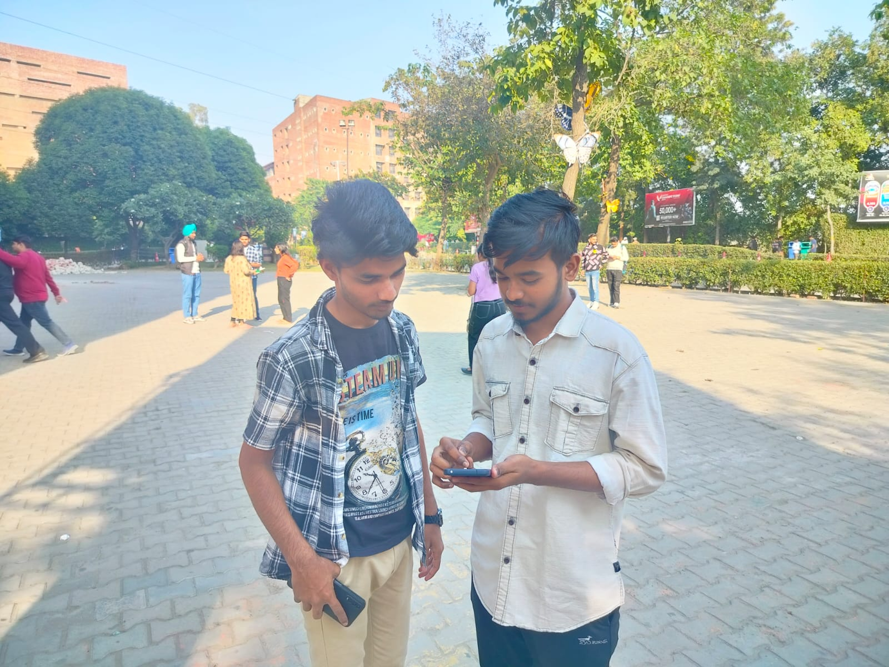
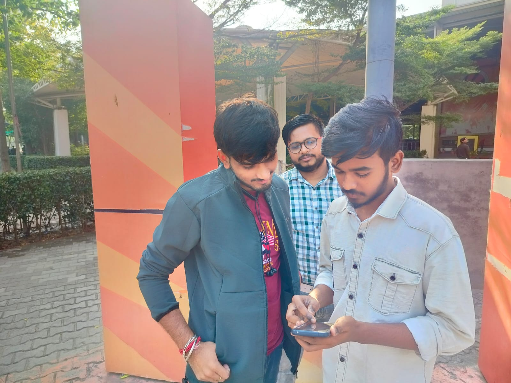
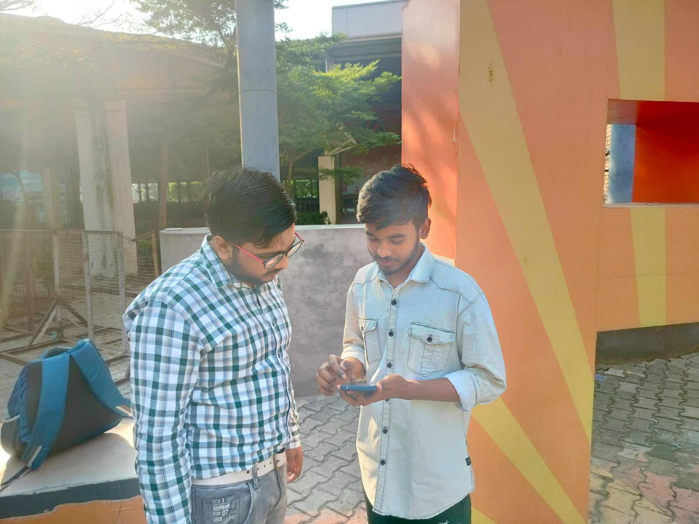
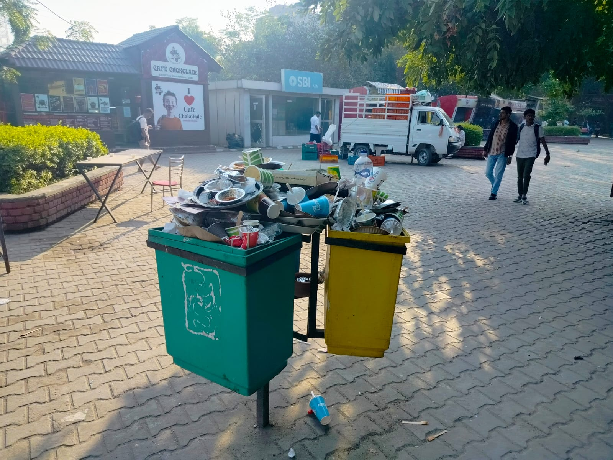
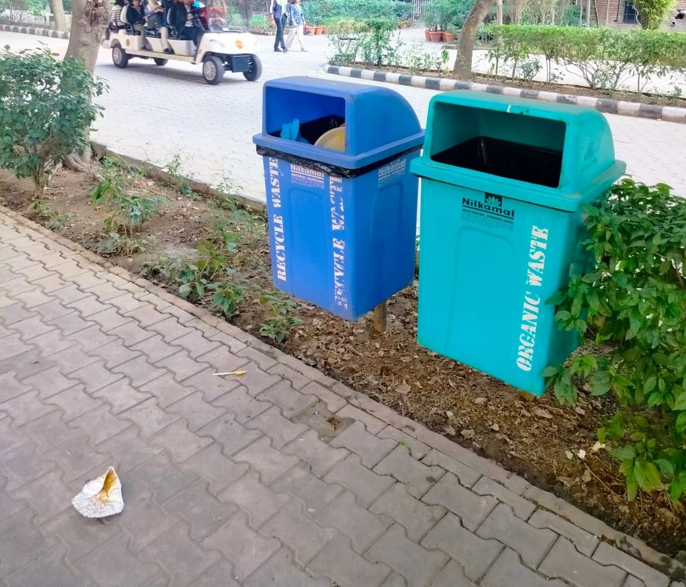
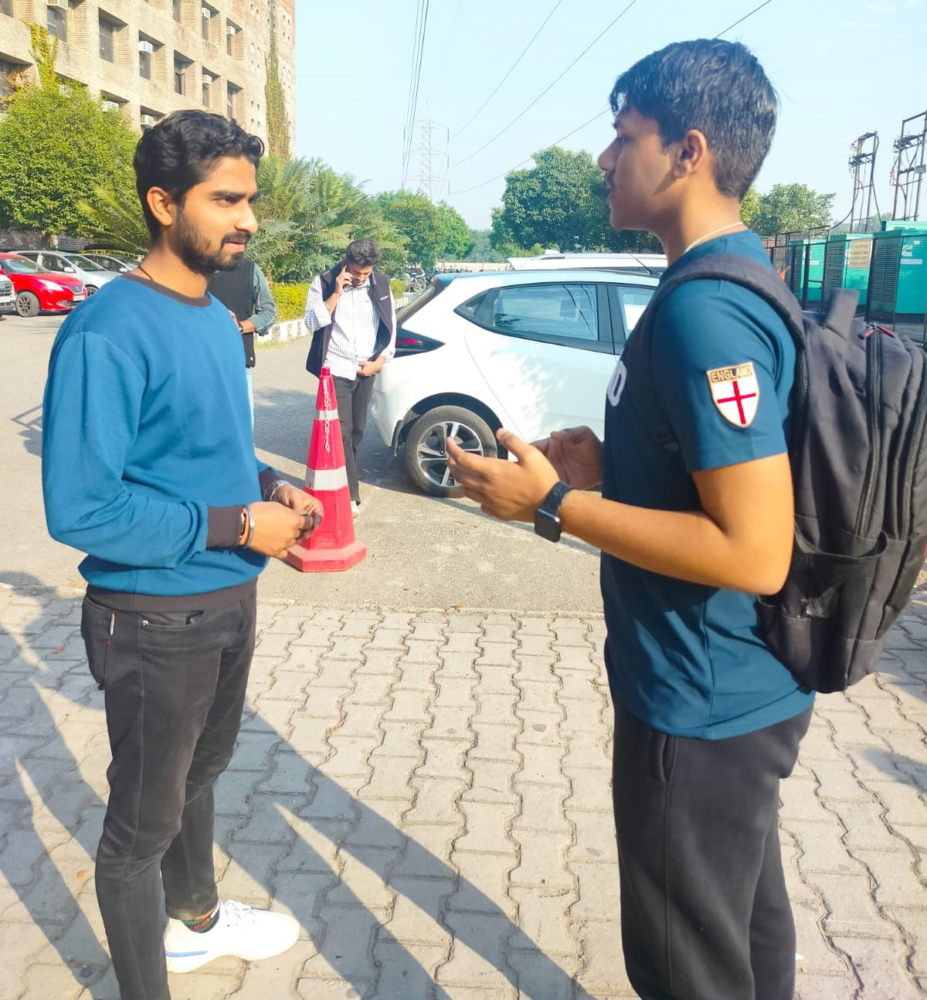
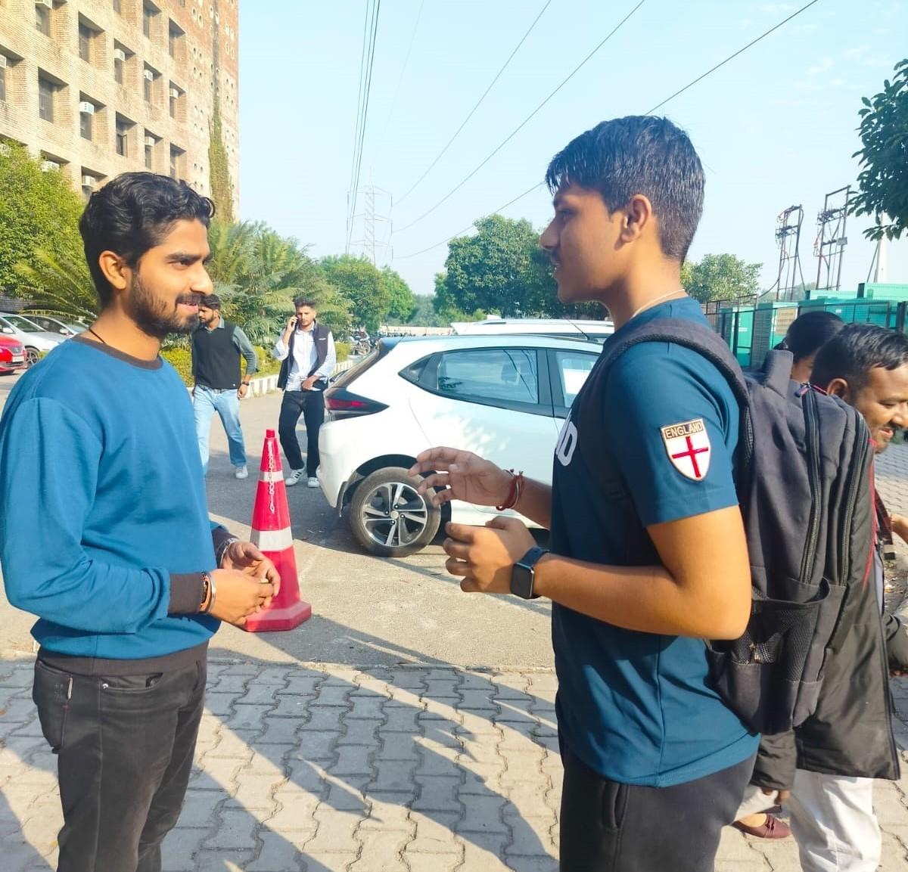
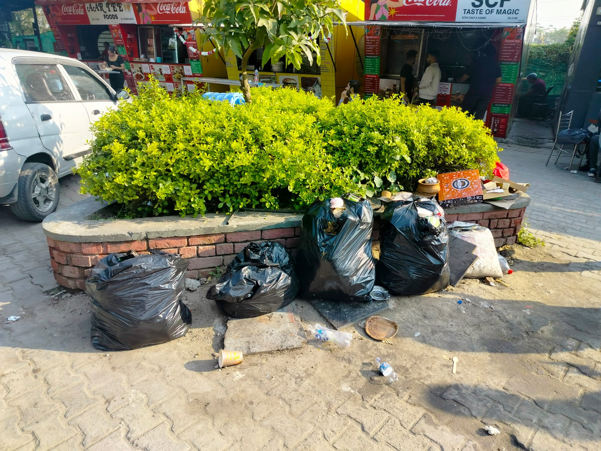
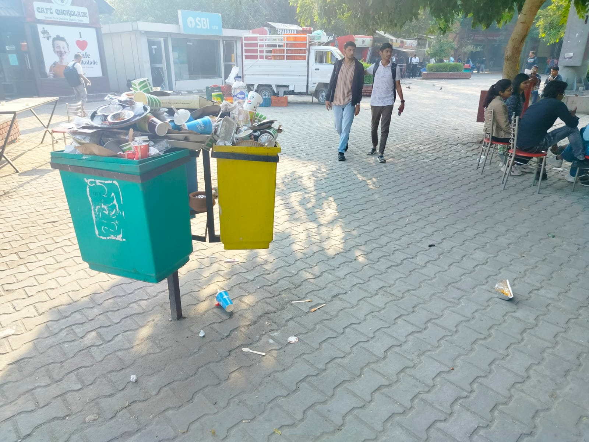
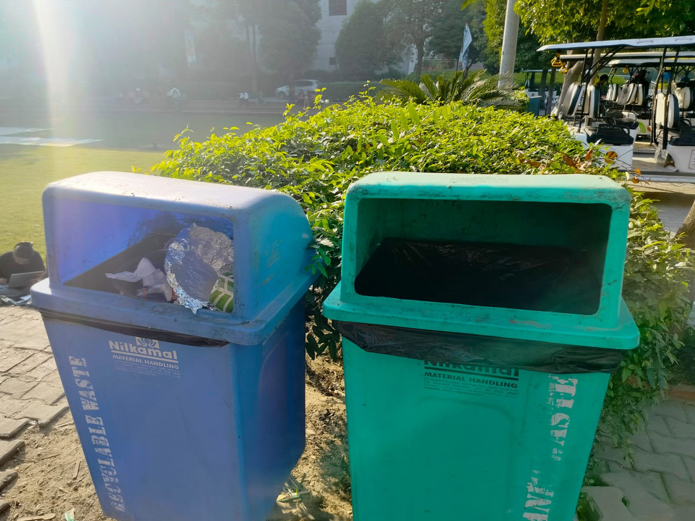
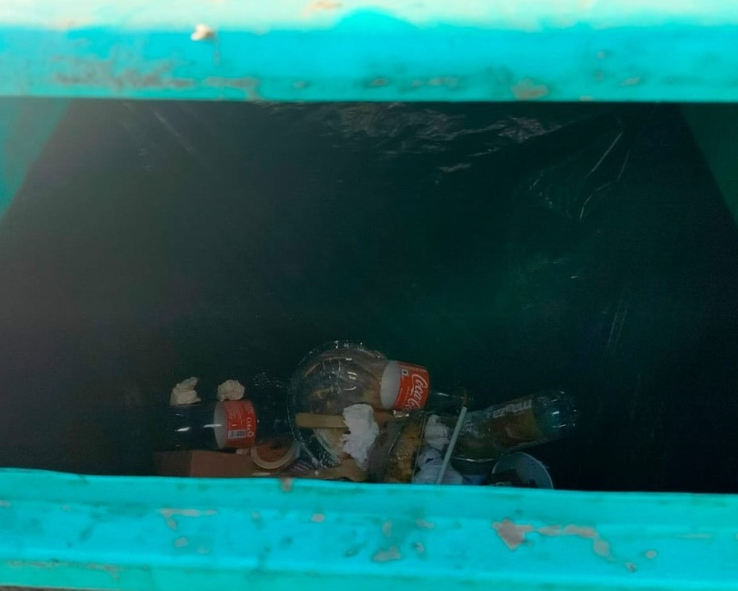
Interactive Elements
Quiz ▼
-
Solid Waste Management Quiz
Data Tables and Charts
Charts ▼
-
Rating of Most significant problem in SWM:
- Observation:-
- It can be seen that the major problems for solid waste management are improper disposal , Lack of Awareness, Increasing Urbanisation, Poor waste segregation
- Although apart from the major problems it can be noticed that other issues are decently significant. Hence demands equal concern in regards of the Solid Waste Management.
-
percentage wise composition:
- Observation:-
- From the pie-chart we can observe the data into the proportional structure.
- The following are higher compared to other (not highly significant tho)
1.improper disposal 2.Lack of Awareness
3.Increasing Urbanisation 4.Poor waste segregation
-
Scrap recycling (Multiple items per person):
- Observation:-
- Noticeably the paper paper is the most recycled waste. As paper waste is commonly traded (recycled) as *radhdi (local scrap collector)
- Paper , Glass , Metal , Plastic being most recycled shows the awareness of respoendants in regards of the knowledge of recycling
-
Composting Habits:
- Observation:-
- It can be observed that a majority of respondents are not Engaged in composting Activities.(It's reason can be rooted to the urbanisation)
- It can also be observed that, of those indugled in composting are composting majorly kitchen and food scrap.
Conclusion
Details ▼
- In conclusion, our research at LPU uncovered a range of insights that collectively form a comprehensive picture of the current state of evaluation of solid waste management on our campus.
- A significant finding is the positive impact of public awareness campaigns. Initiatives have sparked a chain reaction, promoting strong ethical motivations for improved waste management practices. Notably, respondents aware of climate change are more inclined toward responsible waste disposal.
Addressing policy and governing challenges, along with targeted education on hazardous waste, is very important. The survey shows that we really need a strong plan for managing our waste because urbanisation is growing quickly, and that brings more challenges. - Innovation comes as a hope, with resource constraints countered by innovative solutions proposed by the community (Ideas of general public are raw but can be refined with strong plans). This suggests that harnessing creativity, along with detailed workplans, can drive positive change towards the problems of SWM.
- In conclusion, using the observed strength points we found in this survey—like people knowing more (awareness), thinking of new ideas (Innovation), and working together (community works)—LPU can make waste management better. We need to do smart things in education, make sure rules are followed, and keep telling people about it. This will help make our campus cleaner and greener.